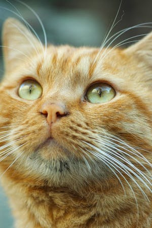

Cocinar postres de internet
Me gusta buscar nuevas recetas en internet, normalmente sigo los tutoriales en Youtube o TikTok y pruebo a hacer postres como pasteles, carlotas, galletas y cupcakes que después comparto con mi familia.

Me gusta buscar nuevas recetas en internet, normalmente sigo los tutoriales en Youtube o TikTok y pruebo a hacer postres como pasteles, carlotas, galletas y cupcakes que después comparto con mi familia.
Disfruto demasiado de ver series y películas de terror junto a mi hermana, nuestras favoritas hasta el momento son la serie de The Haunting Of Hill House y la película de El Conjuro, obviamente también miramos muchas otras más, sin embargo, al ser esas nuestras preferidas las repetimos regularmente.
En mi casa tenemos muchos gatos, sin embargo, a mi gato le gusta mucho estar conmigo así que normalmente juego con él con un listón, le cepillo su cabello y lo acaricio, además me gusta cuando se acuesta encima de mí y ronronea, pasar el tiempo con él me hace muy feliz.
